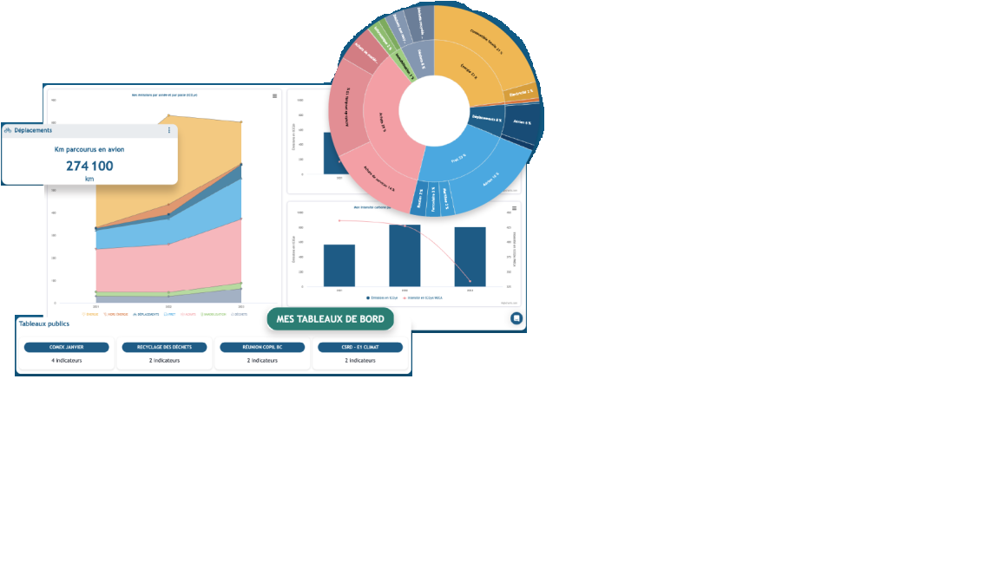

« Ensemble rendons vos finances clairvoyantes »
OptiRisk Analytics, votre partenaire pour une croissance sans surprises.


Construisons votre bilan d’activité
Etablissons ensemble un état des lieux de la performance de votre entreprise
Une revue régulière de vos scénarios de gains et pertes potentiels
Pilotons et surveillons régulièrement l'atteinte de vos objectifs
Construisons votre outil bureautique de gestion financière personnalisé
Votre Outil Excel fait maison et correspondant à vos besoins


Construisons l'architecture de collecte et gestion des données interne de votre entreprise
Etablissons ensemble une architecture sécurisé pour la gestion de vos données
• Installation d’une base de données interne (Sql serveur, …)
• Interface Excel
• Outil d’intégration d’inputs
• Collecte des données